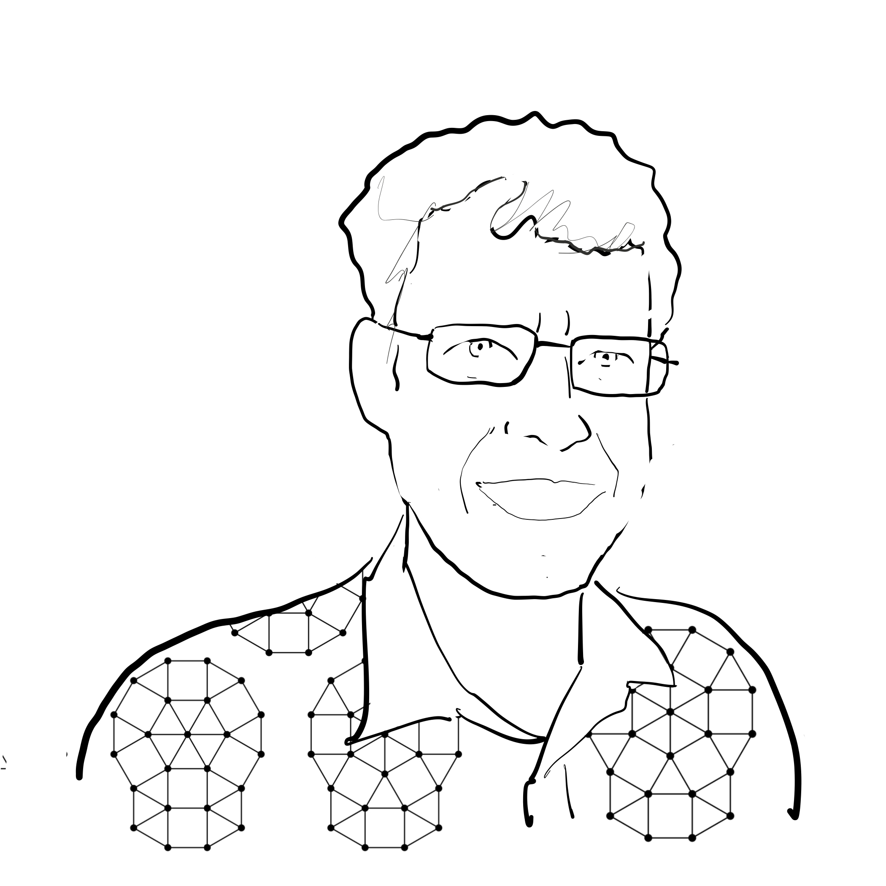
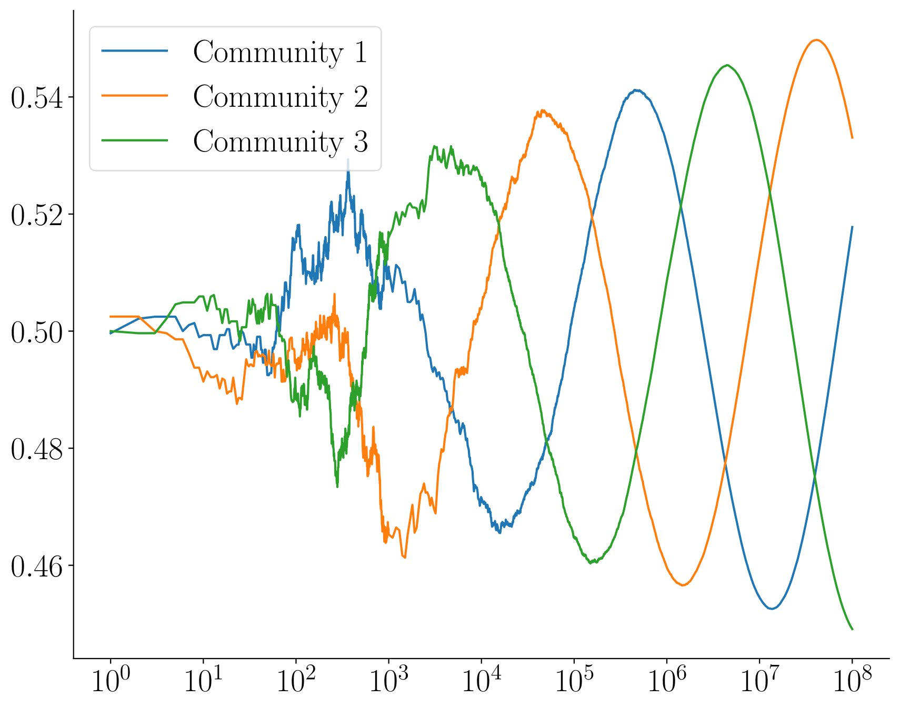

|  |
|
John Haslegrave
Lecturer in Probability
School of Mathematical Sciences
Lancaster University
Office: B29 Fylde
Email: j.haslegrave@lancaster.ac.uk
|
|
 |
|
News
I recently took part in a workshop on ``Extremal and Probabilistic Combinatorics'' at the ICMS, Edinburgh.
I shall be speaking at the Bath Probability Seminar on Monday 27th October.
About me
I am a Lecturer in Probability in the School of Mathematical Sciences at Lancaster University,
where I am a member of the Probability and
Combinatorics groups.
Until September 2023 I was based at the University of Oxford, working with Peter Keevash.
Before that I held postdocs at the University of Warwick and the University of Sheffield, working with Agelos Georgakopoulos,
Hong Liu and Chris Cannings.
Chris, who sadly died in late 2017, had wide-ranging interests in random processes, evolutionary games,
and games on graphs, but was also very influential in the field of statistical genetics. He was a joy to work with, and had a great sense of humour. It was an honour to speak at his Memorial Symposium in 2019.
Here is a picture of the participants, taken by Mark Yarrow.
I did my PhD at Trinity College, Cambridge, supervised by Béla Bollobás.
Teaching 2025/26
Problem solving classes (MATH111)
Group 1, Tuesday 09:00, and group 5, Tuesday 15:00. Weeks 2–4.
MATH326 Graph Theory
Weeks 6–10.
Lectures: Monday 13:00, Furness LT1; Wednesday 12:00 and Thursday 13:00, Faraday Cavendish Colloquium; Friday 10:00 Welcome Centre LT3.
Workshops: Group 2, Tuesday 09:00, and group 3, Friday 15:00, Fylde B35.
Office hours: Thursday, 15:00.
MATH240 Project Skills
I am supervising Project F, entitled Bootstrap percolation.
Briefing: Week 5, Thursday 16:00, Fylde D31.
Office hours: Weeks 6–10, Thursday 16:00.
MATH103 Probability
Weeks 11–15.
Lectures Monday 11:00 and 13:00, Tuesday 12:00, Thursday 11:00, George Fox LT1.
Workshops TBC.
Office hours TBC.
Seminars and talks
I organise the Pure Mathematics Seminar at Lancaster. The schedule is also available here.
Earlier this year, I organised a two-day workshop titled "Advances in Combinatorial and Algebraic Probability",
jointly with my colleague Jessica Jay, supported by an LMS Celebrating New Appointments grant.
I shall be speaking at the Bath Probability Seminar on Monday 27th October. I recently spoke at the Bristol Combinatorics Seminar, the Liverpool Discrete Mathematics Symposium
and the Lancaster University "Open Problems in Mathematics" seminar (aimed at undergraduates).
Research
My main research interests are random graphs, random walks, interacting particle systems and extremal problems on graphs and hypergraphs.
Here are my Google Scholar profile,
my MathSciNet profile,
and my zbMATH profile.
I have an Erdős number of 3, by more than 30 different routes.
My Erdős number of the second kind (only two-author papers count) is also 3, but in this case the route is unique:
John Haslegrave — Itai Benjamini — László Lovász — Paul Erdős.
Below are links to the journal versions of published papers and arXiv preprints for those not yet published. Where the journal version is not open access, both are provided.
Submitted papers and preprints
- K. Clinch, J. Haslegrave,
T. Huynh,
& A. Nixon:
Sharp thresholds for NAC-colourings and stable cuts in random graphs. arXiv
- K. Clinch, D. Garamvölgyi,
J. Haslegrave, T. Huynh, J. Legerský & A. Nixon:
Stable cuts, NAC-colourings and flexible realisations of graphs. arXiv
- A. Georgakopoulos, J. Haslegrave & J. Larsson Danielsson:
Random triangulations of the d-sphere with minimum volume. arXiv
- J. Haslegrave & P. Keevash: Balanced two-type annihilation: mean-field asymptotics. arXiv
- S. Akbari, S. Ghasemi Nezhad, R. Ghazizadeh, J. Haslegrave
& E. Tohidi:
Lower bounds for the Randić index in terms of matching number. arXiv
To appear
- J. Haslegrave: Lonely passengers: a short proof. Electronic Communications in Probability. arXiv
- J. Haslegrave & P. Keevash: Dissipative particle systems on expanders.
Probability Theory and Related Fields. journal (OA)
Publications
2025
- J. Haslegrave, J. Jordan & M. Yarrow:
Competing types in preferential attachment graphs with community structure. Electronic Journal of Probability, 30 (2025).
journal (OA)
- J. Haslegrave: The extremal generalised Randić index for a given degree range.
The Art of Discrete and Applied Mathematics, 8:2 (2025). journal (OA)
- J. Haslegrave, A. Scott,
Y. Tamitegama & J. Tan:
Boundary rigidity of 3D CAT(0) cube complexes. European Journal of Combinatorics, 124 (2025). journal (OA)
2024
- S. Akbari, J. Haslegrave, M. Javadi, N. Nahvi & H. Niaparast:
Tight bounds on the chromatic edge stability index of graphs, Discrete Mathematics, 347:4 (2024). journal (OA)
- S. Cambie, J. Haslegrave & R. J. Kang:
When removing an independent set is optimal for reducing the chromatic number, European Journal of Combinatorics, 115 (2024).
journal (OA)
2023
- J. Haslegrave: Determining triangulations and quadrangulations by boundary distances, Journal of Combinatorial Theory series B 163 (2023).
journal (OA)
- J. Haslegrave: Monitoring edge-geodetic sets: hardness and graph products,
Discrete Applied Mathematics 340 (2023). journal (OA)
- J. Haslegrave: Sum index, difference index and exclusive sum number of graphs, Graphs and Combinatorics 39:2 (2023).
journal (OA)
- J. Haslegrave, J. Hyde,
J. Kim & H. Liu:
Ramsey numbers of cycles versus general graphs, Forum of Mathematics, Sigma 11 (2023).
journal (OA)
- J. Haslegrave: Countable graphs are majority 3-choosable,
Discussiones Mathematicae Graph Theory 43:2 (2023). journal (OA)
2022
- J. Haslegrave, J. Hu, J. Kim, H. Liu, B. Luan & G. Wang:
Crux and long cycles in graphs, SIAM Journal on Discrete Mathematics 36:4 (2022). journal arXiv
- J. Haslegrave, J. Kim & H. Liu: Extremal density for sparse minors and subdivisions, International Mathematics Research Notices 2022:20 (2022). journal (OA)
- S. Cambie & J. Haslegrave: On the relationship between variable Wiener index and variable Szeged index,
Applied Mathematics and Computation 431 (2022). journal (OA)
- J. Haslegrave: The number and average size of connected sets in graphs with degree constraints,
Journal of Graph Theory 100:3 (2022).
journal (OA)
- I. Benjamini & J. Haslegrave: Degrees in link graphs of regular graphs,
Electronic Journal of Combinatorics 29:2 (2022). journal (OA)
- J. Haslegrave, T. Sauerwald & J. Sylvester:
Time dependent biased random walks, ACM Transactions on Algorithms 18:2 (2022).
journal arXiv
- A. Georgakopoulos, J. Haslegrave,
R. Montgomery & B. Narayanan:
Spanning surfaces in 3-graphs, Journal of the European Mathematical Society 24:1 (2022).
journal arXiv
- J. Haslegrave: The path minimises the average size of a connected induced subgraph, Discrete Mathematics 345:5 (2022).
journal (OA)
- A. Georgakopoulos, J. Haslegrave, T. Sauerwald & J. Sylvester:
The power of two choices in random walks, Combinatorics, Probability and Computing 31:1 (2022).
journal (OA)
2021
- A. Georgakopoulos & J. Haslegrave: A time-invariant random graph with splitting events,
Electronic Communications in Probability 26 (2021).
journal (OA)
- J. Haslegrave, V. Sidoravicius & L. Tournier:
Three-speed ballistic annihilation: phase transition and universality, Selecta Mathematica 27 (2021).
journal arXiv
Dedicated to Vladas Sidoravicius, who sadly passed away shortly after this work was completed.
- J. Haslegrave & L. Tournier: Combinatorial universality in three-speed ballistic annihilation, in In and Out of Equilibrium 3: Celebrating Vladas Sidoravicius, Progress in Probability 77 (2021). arXiv
- J. Haslegrave & C. Panagiotis: Site percolation and isoperimetric inequalities for plane graphs, Random Structures and Algorithms 58:1 (2021). journal (OA)
2020 and earlier
- A. Georgakopoulos & J. Haslegrave: Percolation on an infinitely generated group, Combinatorics, Probability and Computing 29:4 (2020). journal arXiv
- J. Haslegrave, J. Jordan & M. Yarrow: Condensation in preferential attachment models with location-based choice, Random Structures and Algorithms 56:3 (2020). journal arXiv
- R. Henze, C. Mu, et al.: Multi-scale stochastic organization-oriented coarse-graining exemplified on the human mitotic checkpoint, Scientific Reports 9 (2019). journal (OA)
- A. Georgakopoulos, J. Haslegrave & R. Montgomery: Forcing large tight components in 3-graphs, European Journal of Combinatorics 77 (2019).
journal (OA)
- J. Haslegrave & J. Jordan: Non-convergence of proportions of types in a preferential attachment graph with three co-existing types, Electronic Communications in Probability 23 (2018). journal (OA)
Dedicated to our late friend and colleague Chris Cannings.
- J. Haslegrave: Proof of a local antimagic conjecture, Discrete Mathematics and Theoretical Computer Science 20:1 (2018). journal (OA)
- J. Haslegrave, R. A. B. Johnson & S. Koch: Locating a robber with multiple probes,
Discrete Mathematics 341:1 (2018). journal (OA)
- J. Haslegrave & M. Puljiz: Reaching consensus on a connected graph, Journal of Applied Probability 54:1 (2017). journal arXiv
- J. Haslegrave & C. Cannings: Majority dynamics with one nonconformist, Discrete Applied Mathematics 219 (2017). journal (OA)
- J. Haslegrave, R. A. B. Johnson & S. Koch: Subdivisions in the robber-locating game, Discrete Mathematics 339:11 (2016). journal (OA)
- J. Haslegrave & J. Jordan: Preferential attachment with choice, Random Structures and Algorithms 48:4 (2016). journal arXiv
- J. Haslegrave, R. A. B. Johnson & S. Koch: The robber-locating game, Discrete Mathematics 339:1 (2016). journal (OA)
- J. Haslegrave: Judicious partitions of uniform hypergraphs, Combinatorica 34:5 (2014). journal arXiv
- J. Haslegrave: Bounds on Herman's algorithm, Theoretical Computer Science 550 (2014). journal (OA)
- J. Haslegrave: Extremal results on average subtree density of series-reduced trees, Journal of Combinatorial Theory series B 107 (2014). journal (OA)
- J. Haslegrave: An evasion game on a graph, Discrete Mathematics 314 (2014). journal (OA)
- J. Haslegrave: The Bollobás–Thomason conjecture for 3-uniform hypergraphs, Combinatorica 32:4 (2012). journal arXiv
Conference proceedings
- J. Haslegrave, J. Kim & H. Liu: Extremal density for sparse minors and subdivisions, Extended Abstracts EuroComb 2021. book
- A. Georgakopoulos, J. Haslegrave, T. Sauerwald & J. Sylvester: Choice and bias in random walks,
Innovations in Theoretical Computer Science 2020. proceedings (OA)
{kind=link}